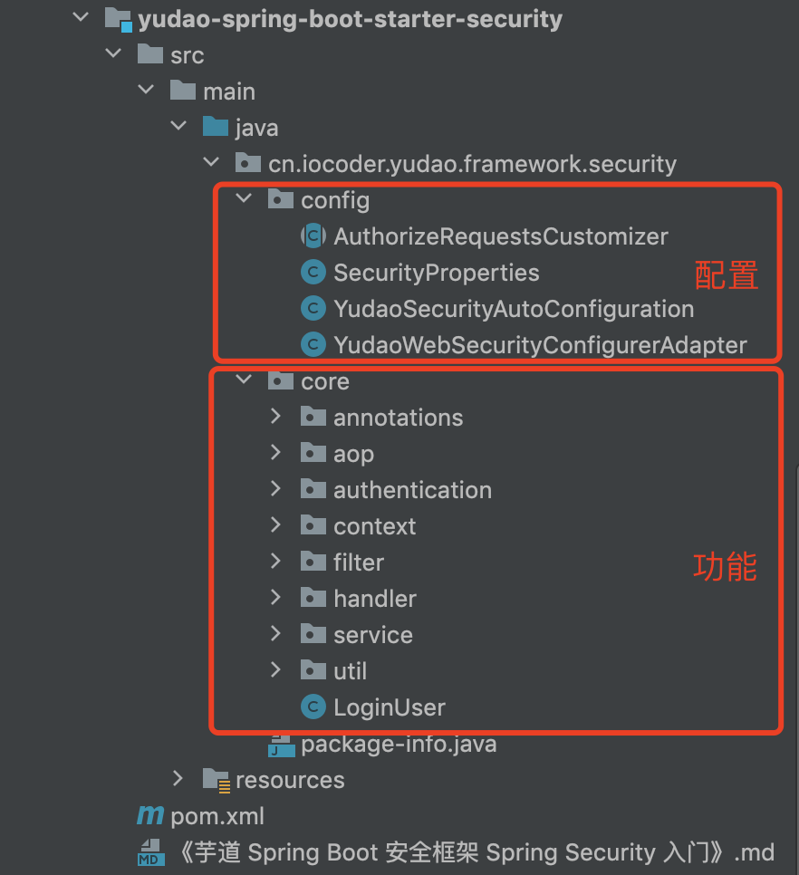
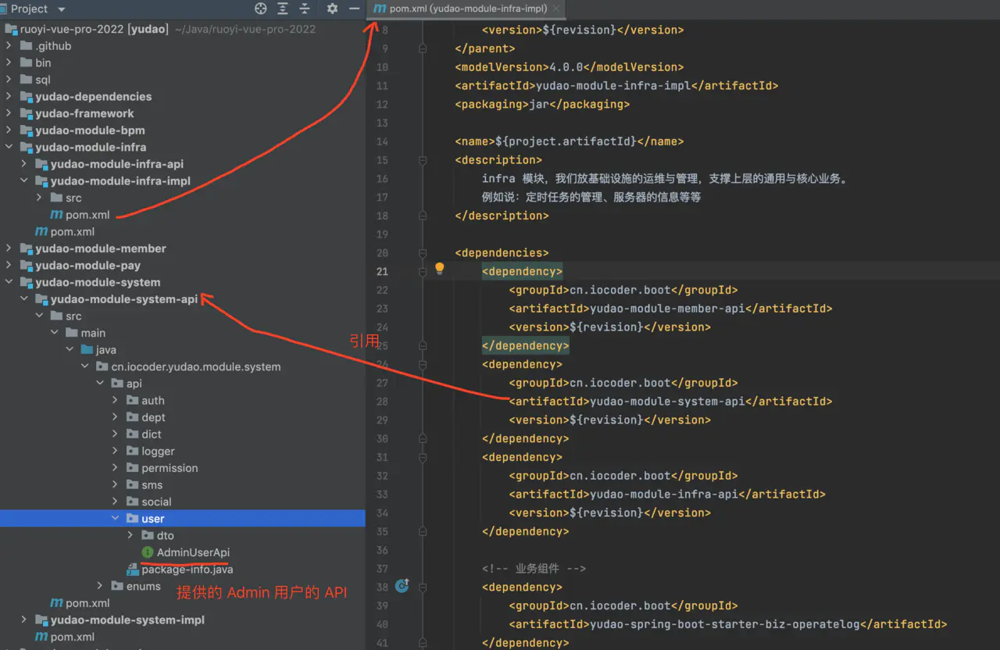
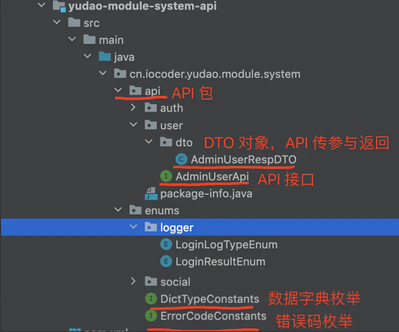
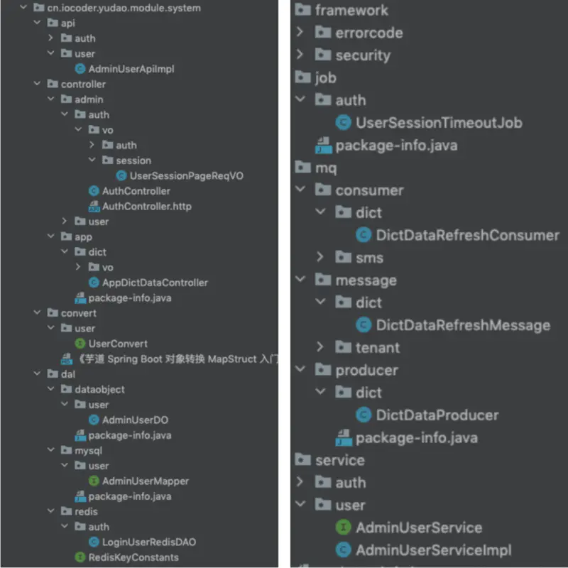
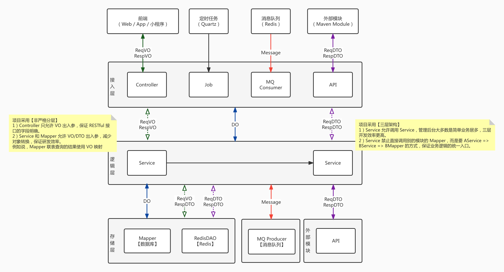
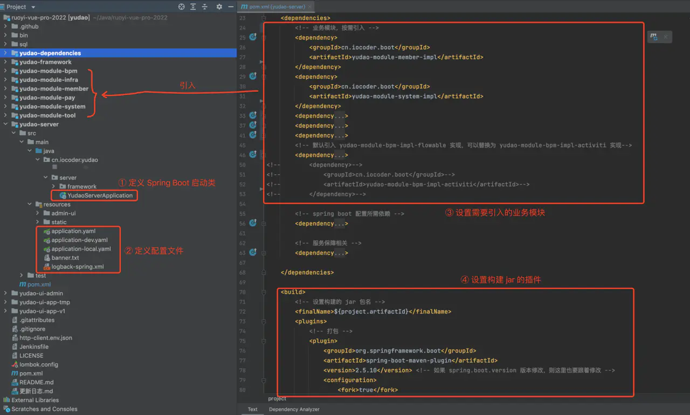

项目结构
项目结构

# 👍 相关视频教程
- 从零开始 01：视频课程导读：项目简介、功能列表、技术选型 (opens new window)
- 从零开始 04：自顶向下，讲解项目的整体结构（上） (opens new window)
- 从零开始 04：自顶向下，讲解项目的整体结构（下） (opens new window)
# 👻 后端结构
后端采用模块化的架构，按照功能拆分成多个 Maven Module，提升开发与研发的效率，带来更好的可维护性。
一共有四类 Maven Module：
| Maven Module | 作用 |
|---|---|
yudao-dependencies |
Maven 依赖版本管理 |
yudao-framework |
Java 框架拓展 |
yudao-module-xxx |
XXX 功能的 Module 模块 |
yudao-server |
管理后台 + 用户 App 的服务端 |
下面，我们来逐个看看。
# 1. yudao-dependencies
该模块是一个 Maven Bom，只有一个
pom.xml
(opens new window)
文件，定义项目中所有 Maven
依赖的版本号，解决依赖冲突问题。
详细的解释，可见 《微服务中使用 Maven BOM 来管理你的版本依赖 》 (opens new window) 文章。
从定位上来说，它和 Spring Boot 的
spring-boot-starter-parent
(opens new window)
和 Spring Cloud 的
spring-cloud-dependencies
(opens new window)
是一致的。
实际上，ruoyi-vue-pro
本质上还是个单体项目，直接在根目录
pom.xml
(opens new window)
管理依赖版本会更加方便，也符合绝大多数程序员的认知。但是要额外考虑一个场景，如果每个
yudao-module-xxx 模块都维护在一个独立的 Git
仓库，那么 yudao-dependencies 就可以在多个
yudao-module-xxx 模块下复用。
# 2. yudao-framework
该模块是
ruoyi-vue-pro 项目的框架封装，其下的每个 Maven
Module 都是一个组件，分成两种类型：
① 技术组件：技术相关的组件封装，例如说 MyBatis、Redis 等等。
| Maven Module | 作用 |
|---|---|
yudao-common |
定义基础 pojo 类、枚举、工具类等 |
yudao-spring-boot-starter-web |
Web 封装，提供全局异常、访问日志等 |
yudao-spring-boot-starter-websocket
|
WebSocket 封装，提供 Token 认证、WebSocket 集群广播、Message 监听 |
yudao-spring-boot-starter-security |
认证授权，基于 Spring Security 实现 |
yudao-spring-boot-starter-mybatis |
数据库操作，基于 MyBatis Plus 实现 |
yudao-spring-boot-starter-redis |
缓存操作，基于 Spring Data Redis + Redisson 实现 |
yudao-spring-boot-starter-mq |
消息队列，基于 Redis 实现，支持集群消费和广播消费 |
yudao-spring-boot-starter-job |
定时任务，基于 Quartz 实现，支持集群模式 |
yudao-spring-boot-starter-protection
|
服务保障，提供幂等、分布式锁、限流、熔断等功能 |
yudao-spring-boot-starter-excel |
Excel 导入导出，基于 EasyExcel 实现 |
yudao-spring-boot-starter-monitor |
服务监控，提供链路追踪、日志服务、指标收集等功能 |
yudao-spring-boot-starter-test |
单元测试，基于 Junit + Mockito 实现 |
yudao-spring-boot-starter-file 【已合并】
|
文件客户端，支持将文件存储到 S3（MinIO、阿里云、腾讯云、七牛云）、本地、FTP、SFTP、数据库等 |
yudao-spring-boot-starter-captcha
【已合并】
|
验证码 Captcha，提供滑块验证码 |
yudao-spring-boot-starter-flowable
【已合并】
|
工作流，基于 Flowable 实现 |
友情提示：
-
yudao-spring-boot-starter-file组件：自2.0.1版本，合并到yudao-module-infra-biz模块的framework/file包下，一方面减少 starter 提升编译速度，一方面只有 infra 模块使用到 -
yudao-spring-boot-starter-captcha组件：自2.0.1版本，合并到yudao-module-system-biz模块的framework/captcha包下，一方面减少 starter 提升编译速度，一方面只有 system 模块使用到 -
yudao-spring-boot-starter-flowable组件：自2.0.1版本，合并到yudao-module-bpm-biz模块的framework/flowable包下，一方面减少 starter 提升编译速度，一方面只有 bpm 模块使用到
②
业务组件：业务相关的组件封装，例如说数据字典、操作日志等等。如果是业务组件，名字会包含
biz 关键字。
| Maven Module | 作用 |
|---|---|
yudao-spring-boot-starter-biz-tenant
|
SaaS 多租户 |
yudao-spring-boot-starter-biz-data-permission
|
数据权限 |
yudao-spring-boot-starter-biz-operatelog
|
操作日志 |
yudao-spring-boot-starter-biz-pay |
支付客户端，对接微信支付、支付宝等支付平台 |
yudao-spring-boot-starter-biz-ip |
地区 & IP 库 |
友情提示：
-
yudao-spring-boot-starter-biz-operatelog组件：自2.1.0版本，合并到yudao-spring-boot-starter-security组件的operatelog包下，主要减少 starter 提升编译速度
每个组件，包含两部分：
-
core包：组件的核心封装，拓展相关的功能。 -
config包：组件的 Spring Boot 自动配置。

# 3. yudao-module-xxx
该模块是 XXX 功能的 Module 模块，目前内置了 8 个模块。
| 项目 | 说明 | 是否必须 |
|---|---|---|
yudao-module-system |
系统功能 | √ |
yudao-module-infra |
基础设施 | √ |
yudao-module-member |
会员中心 | x |
yudao-module-bpm |
工作流程 | x |
yudao-module-pay |
支付系统 | x |
yudao-module-report |
大屏报表 | x |
yudao-module-mall |
商城系统 | x |
yudao-module-erp |
ERP 系统 | x |
yudao-module-crm |
CRM 系统 | x |
yudao-module-ai |
AI 大模型 | x |
yudao-module-mp |
微信公众号 | x |
每个模块包含两个 Maven Module，分别是：
| Maven Module | 作用 |
|---|---|
yudao-module-xxx-api |
提供给其它模块的 API 定义 |
yudao-module-xxx-biz |
模块的功能的具体实现 |
例如说，yudao-module-infra 想要访问
yudao-module-system
的用户、部门等数据，需要引入
yudao-module-system-api 子模块。示例如下：

疑问：为什么设计 `yudao-module-xxx-api` 模块呢？
- 明确需要提供给其它模块的 API 定义，方便未来迁移微服务架构。
- 模块之间可能会存在相互引用的情况，虽然说从系统设计上要尽量避免，但是有时在快速迭代的情况下，可能会出现。此时，通过只引用对方模块的 API 子模块，解决相互引用导致 Maven 无法打包的问题。
yudao-module-xxx-api 子模块的项目结构如下：

| 所在包 | 类 | 作用 | 示例 |
|---|---|---|---|
api |
Api 接口 | 提供给其它模块的 API 接口 | AdminUserApi (opens new window) |
api |
DTO 类 | Api 接口的入参 ReqDTO、出参 RespDTO | LoginLogCreateReqDTO (opens new window) DeptRespDTO (opens new window) |
enums |
Enum 类 | 字段的枚举 | LoginLogTypeEnum (opens new window) |
enums |
DictTypeConstants 类 | 数据字典的枚举 | DictTypeConstants (opens new window) |
enums |
ErrorCodeConstants 类 | 错误码的枚举 | ErrorCodeConstants (opens new window) |
yudao-module-xxx-biz 子模块的项目结构如下：

| 所在包 | 类 | 作用 | 示例 |
|---|---|---|---|
api |
ApiImpl 类 | 提供给其它模块的 API 实现类 | AdminUserApiImpl (opens new window) |
controler.admin |
Controller 类 |
提供给管理后台的 RESTful API，默认以
admin-api/ 作为前缀。例如 admin-api/system/auth/login 登录接口
|
AuthController (opens new window) |
controler.admin |
VO 类 | Admin Controller 接口的入参 ReqVO、出参 RespVO | AuthLoginReqVO (opens new window) AuthLoginRespVO (opens new window) |
controler.app |
Controller 类，以 App 为前缀 |
提供给用户 App 的 RESTful API，默认以
app-api/ 作为前缀。例如 app-api/member/auth/login 登录接口
|
AppAuthController (opens new window) |
controler.app |
VO 类，以 App 为前缀 | App Controller 接口的入参 ReqVO、出参 RespVO | AppAuthLoginReqVO (opens new window) AppAuthLoginRespVO (opens new window) |
controler |
.http 文件 |
IDEA Http Client 插件 (opens new window)，模拟请求 RESTful 接口 | AuthController.http (opens new window) |
service |
Service 接口 | 业务逻辑的接口定义 | AdminUserService (opens new window) |
service |
ServiceImpl 类 | 业务逻辑的实现类 | AdminUserServiceImpl (opens new window) |
dal |
- | Data Access Layer，数据访问层 | |
dal.dataobject |
DO 类 | Data Object，映射数据库表、或者 Redis 对象 | AdminUserDO (opens new window) |
dal.mysql |
Mapper 接口 | 数据库的操作 | AdminUserMapper (opens new window) |
dal.redis |
RedisDAO 类 | Redis 的操作 | LoginUserRedisDAO (opens new window) |
convert |
Convert 接口 | DTO / VO / DO 等对象之间的转换器 | UserConvert (opens new window) |
job |
Job 类 | 定时任务 | DemoJob (opens new window) |
mq |
- | Message Queue，消息队列 | |
mq.message |
Message 类 | 发送和消费的消息 | SmsSendMessage (opens new window) |
mq.producer |
Producer 类 | 消息的生产者 | SmsProducer (opens new window) |
mq.consumer |
Producer 类 | 消息的消费者 | SmsSendConsumer (opens new window) |
framework |
- | 模块自身的框架封装 |
framework
(opens new window)
|
疑问：为什么 Controller 分成 Admin 和 App 两种？
提供给 Admin 和 App 的 RESTful API 接口是不同的，拆分后更加清晰。
疑问：为什么 VO 分成 Admin 和 App 两种？
相同功能的 RESTful API 接口，对于 Admin 和 App 传入的参数、返回的结果都可能是不同的。例如说，Admin 查询某个用户的基本信息时，可以返回全部字段；而 App 查询时，不会返回 mobile 手机等敏感字段。
疑问：为什么 DO 不作为 Controller 的出入参？
- 明确每个 RESTful API 接口的出入参。例如说，创建部门时，只需要传入 name、parentId 字段，使用 DO 接参就会导致 type、createTime、creator 等字段可以被传入，导致前端同学一脸懵逼。
- 每个 RESTful API 有自己独立的 VO，可以更好的设置 Swagger 注解、Validator 校验规则，而让 DO 保持整洁，专注映射好数据库表。
疑问：为什么操作 Redis 需要通过 RedisDAO？
Service 直接使用 RedisTemplate 操作 Redis，导致大量 Redis 的操作细节和业务逻辑杂糅在一起，导致代码不够整洁。通过 RedisDAO 类，将每个 Redis Key 像一个数据表一样对待，清晰易维护。
总结来说，每个模块采用三层架构 + 非严格分层，如下图所示：

疑问：如果 message 需要跨模块共享，类似 api 的效果，可以怎么做？
可以在
yudao-module-xxx-api 子模块下，新建一个
message 包，可参考 MemberUserCreateMessage
类。
# 4. yudao-server
该模块是后端 Server 的主项目，通过引入需要
yudao-module-xxx 业务模块，从而实现提供 RESTful
API 给 yudao-ui-admin-vue3、yudao-mall-uniapp
等前端项目。
本质上来说，它就是个空壳（容器）！如下图所示：

# 👾 前端结构
前端一共有六个项目，分别是：
| 项目 | 说明 |
|---|---|
yudao-ui-admin-vue3
(opens new window)
|
基于 Vue3 + element-plus 实现的管理后台 |
yudao-ui-admin-vben
(opens new window)
|
基于 Vue3 + vben5.0(ant-design-vue) 实现的管理后台 |
yudao-ui-admin-vue2
(opens new window)
|
基于 Vue2 + element-ui 实现的管理后台 |
yudao-ui-go-view
(opens new window)
|
基于 Vue3 + naive-ui 实现的大屏报表 |
yudao-ui-admin-uniapp
(opens new window)
|
基于 uni-app + uni-ui 实现的管理后台的小程序 |
yudao-mall-uniapp
(opens new window)
|
基于 uni-app + uview 实现的用户 App |
# 1. yudao-ui-admin-vue3
.
├── .github # github workflows 相关
├── .husky # husky 配置
├── .vscode # vscode 配置
├── mock # 自定义 mock 数据及配置
├── public # 静态资源
├── src # 项目代码
│ ├── api # api接口管理
│ ├── assets # 静态资源
│ ├── components # 公用组件
│ ├── hooks # 常用hooks
│ ├── layout # 布局组件
│ ├── locales # 语言文件
│ ├── plugins # 外部插件
│ ├── router # 路由配置
│ ├── store # 状态管理
│ ├── styles # 全局样式
│ ├── utils # 全局工具类
│ ├── views # 路由页面
│ ├── App.vue # 入口vue文件
│ ├── main.ts # 主入口文件
│ └── permission.ts # 路由拦截
├── types # 全局类型
├── .env.base # 本地开发环境 环境变量配置
├── .env.dev # 打包到开发环境 环境变量配置
├── .env.gitee # 针对 gitee 的环境变量 可忽略
├── .env.pro # 打包到生产环境 环境变量配置
├── .env.test # 打包到测试环境 环境变量配置
├── .eslintignore # eslint 跳过检测配置
├── .eslintrc.js # eslint 配置
├── .gitignore # git 跳过配置
├── .prettierignore # prettier 跳过检测配置
├── .stylelintignore # stylelint 跳过检测配置
├── .versionrc 自动生成版本号及更新记录配置
├── CHANGELOG.md # 更新记录
├── commitlint.config.js # git commit 提交规范配置
├── index.html # 入口页面
├── package.json
├── .postcssrc.js # postcss 配置
├── prettier.config.js # prettier 配置
├── README.md # 英文 README
├── README.zh-CN.md # 中文 README
├── stylelint.config.js # stylelint 配置
├── tsconfig.json # typescript 配置
├── vite.config.ts # vite 配置
└── windi.config.ts # windicss 配置
# 2. yudao-ui-admin-vben
目录使用 Monorepo 管理，项目结构如下
.
├── Dockerfile # Docker 镜像构建文件
├── README.md # 项目说明文档
├── apps # 项目应用目录
│ ├── backend-mock # 后端模拟服务应用
│ ├── web-antd # 基于 Ant Design Vue 的前端应用
│ ├── web-ele # 基于 Element Plus 的前端应用
│ └── web-naive # 基于 Naive UI 的前端应用
├── build-local-docker-image.sh # 本地构建 Docker 镜像脚本
├── cspell.json # CSpell 配置文件
├── docs # 项目文档目录
├── eslint.config.mjs # ESLint 配置文件
├── internal # 内部工具目录
│ ├── lint-configs # 代码检查配置
│ │ ├── commitlint-config # Commitlint 配置
│ │ ├── eslint-config # ESLint 配置
│ │ ├── prettier-config # Prettier 配置
│ │ └── stylelint-config # Stylelint 配置
│ ├── node-utils # Node.js 工具
│ ├── tailwind-config # Tailwind 配置
│ ├── tsconfig # 通用 tsconfig 配置
│ └── vite-config # 通用Vite 配置
├── package.json # 项目依赖配置
├── packages # 项目包目录
│ ├── @core # 核心包
│ │ ├── base # 基础包
│ │ │ ├── design # 设计相关
│ │ │ ├── icons # 图标
│ │ │ ├── shared # 共享
│ │ │ └── typings # 类型定义
│ │ ├── composables # 组合式 API
│ │ ├── preferences # 偏好设置
│ │ └── ui-kit # UI 组件集合
│ │ ├── layout-ui # 布局 UI
│ │ ├── menu-ui # 菜单 UI
│ │ ├── shadcn-ui # shadcn UI
│ │ └── tabs-ui # 标签页 UI
│ ├── constants # 常量
│ ├── effects # 副作用相关包
│ │ ├── access # 访问控制
│ │ ├── plugins # 第三方大型依赖插件
│ │ ├── common-ui # 通用 UI
│ │ ├── hooks # 组合式 API
│ │ ├── layouts # 布局
│ │ └── request # 请求
│ ├── icons # 图标
│ ├── locales # 国际化
│ ├── preferences # 偏好设置
│ ├── stores # 状态管理
│ ├── styles # 样式
│ ├── types # 类型定义
│ └── utils # 工具
├── playground # 演示目录
├── pnpm-lock.yaml # pnpm 锁定文件
├── pnpm-workspace.yaml # pnpm 工作区配置文件
├── scripts # 脚本目录
│ ├── turbo-run # Turbo 运行脚本
│ └── vsh # VSH 脚本
├── stylelint.config.mjs # Stylelint 配置文件
├── turbo.json # Turbo 配置文件
├── vben-admin.code-workspace # VS Code 工作区配置文件
└── vitest.config.ts # Vite 配置文件
# 3. yudao-admin-ui
├── bin // 执行脚本
├── build // 构建相关
├── public // 公共文件
│ ├── favicon.ico // favicon 图标
│ └── index.html // html 模板
│ └── robots.txt // 反爬虫
├── src // 源代码
│ ├── api // 所有请求【重要】
│ ├── assets // 主题、字体等静态资源
│ ├── components // 全局公用组件
│ ├── directive // 全局指令
│ ├── icons // 图标
│ ├── layout // 布局
│ ├── plugins // 插件
│ ├── router // 路由
│ ├── store // 全局 store 管理
│ ├── utils // 全局公用方法
│ ├── views // 视图【重要】
│ ├── App.vue // 入口页面
│ ├── main.js // 入口 JS，加载组件、初始化等
│ ├── permission.js // 权限管理
│ └── settings.js // 系统配置
├── .editorconfig // 编码格式
├── .env.development // 开发环境配置
├── .env.production // 生产环境配置
├── .env.staging // 测试环境配置
├── .eslintignore // 忽略语法检查
├── .eslintrc.js // eslint 配置项
├── .gitignore // git 忽略项
├── babel.config.js // babel.config.js
├── package.json // package.json
└── vue.config.js // vue.config.js
# 4. yudao-admin-ui-uniapp
TODO 待补充
# 5. yudao-mall-uniapp
├── pages // 页面
│ ├── index // 入口页面
│ ├── user // 用户相关
│ ├── public // 公共页面
│ ├── activity // 活动页面
│ ├── app // 积分、签到页面
│ ├── chat // 客服页面
│ ├── commission // 分销页面
│ ├── coupon // 优惠券页面
│ ├── goods // 商品页面
│ ├── order // 订单页面
│ ├── pay // 支付页面
├── sheep // 底层依赖/工具库
│ ├── api // 服务端接口
│ ├── components // 自定义功能组件
│ ├── config // 配置文件
│ ├── helper // 助手函数
│ ├── hooks // vue-hooks
│ ├── libs // 自定义依赖
│ ├── platform // 第三方平台登录、分享、支付
│ ├── request // 请求类库
│ ├── router // 自定义路由跳转
│ ├── scss // 主样式库
│ ├── store // pinia状态管理模块
│ ├── ui // 自定义UI组件
│ ├── url // cdn图片地址格式化
│ ├── validate // 通用验证器
│ ├── index.js // Shopro入口文件
├── uni_modules // dcloud第三方插件
# 6. yudao-ui-go-view
TODO 待补充